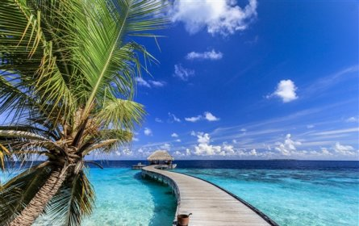

| Images |
Description |
 |
RomeWhen you visit the Eternal City, prepare to cross a few must-see attractions – including the Colosseum, the Trevi Fountain and the Pantheon – off of your bucket list. Additional treasures, such as St. Peter's Basilica and the Sistine Chapel, can be found in nearby Vatican City. Escape the tourist crowds by taking a twilight stroll along the cobblestone streets of Trastevere, or head to Mercato Centrale Roma to sample local delicacies like gelato and pizza. |
|  |
MaldivesIt is not cheap or easy to reach, but this isolated paradise between the Arabian and Laccadive seas is the personification of a dreamy tropical vacation. In this South Asian destination, which is made up of more than 1,000 islands, thatched-roof bungalows sit above crystal-clear aquamarine waters, providing easy water access and a romantic atmosphere. |
 |
Phuket Located in southern Thailand, Phuket offers something for everyone, especially budget-minded travelers. Activities like spa treatments and boat tours come with low price tags, as do accommodations. For stunning scenery, check out the limestone cliffs of Phang Nga Bay and lounge on Phuket's gorgeous white sand beaches (Freedom Beach and Bangtao Beach are two visitor favorites). |
 |
New zealand New Zealand's South Island brims with majestic landscapes at every turn, from dramatic mountains to fjords to glaciers. Here, you can admire the mountains of Fiordland National Park, a UNESCO World Heritage Site, from hiking trails or a boat on Milford Sound. At night, journey to the University of Canterbury's Mount John Observatory to gaze at the starry skies. |